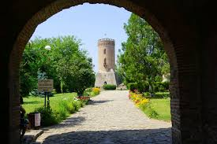

Orașul Târgoviște te fascinează prin istoria, oamenii şi locurile sale, fiind Curtea Domnească a Ţării Româneşti pentru nu mai puțin de 33 de voievozi, printre care: Mircea cel Bătrân, Vlad Țepes, Radu cel Mare, Neagoe Basarab, Radu de la Afumați, Petru Cercel, Mihai Viteazul, Matei Basarab și încheind cu domnia fabuloasă a lui Constantin Brâncoveanu.
Turnir (din franceza veche torneiement, tornei) este numele dat competițiilor de cavalerie sau jocurilor simulate din Evul Mediu sau din epoca Renașterii (secolele XII-XVI). Turnirurile medievale sau jocurile de război reprezentau o formă importantă de divertisment, apreciată atât de oamenii obișnuiți, cât și de nobili. Nobilii sponsorizau competițiile și premiile pentru combatanți. Jocurile de război au început ca lupte simulate între doi inamici care adunau armate de mici dimensiuni. Cei doi inamici cădeau de acord asupra întâlnirii într-un loc desemnat pentru a purta acest simulacru de război. Numărul combatanților varia de la câteva zeci la câteva mii. În Evul mediu cavalerii, când nu se luptau în război, participau la turniruri. Acestea serveau drept antrenament pentru cavaleri și de asemenea pentru cai. Aceste competiții se făceau la castel în prezența regilor sau a altor seniori, fiind considerate mari sărbători. Cel care pierdea în turnir era nevoit sa-i dea adversarului armura lui și calul. Ca arme erau folosite lănci etc.
